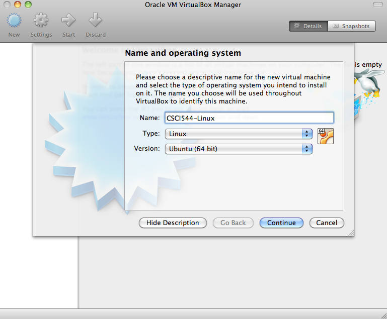
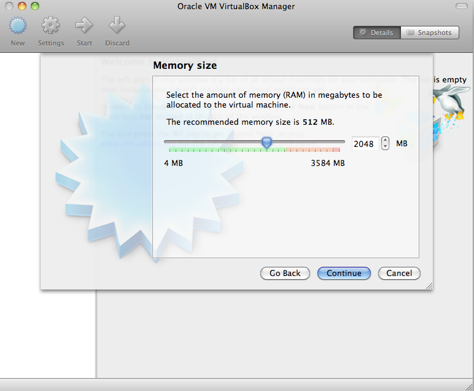
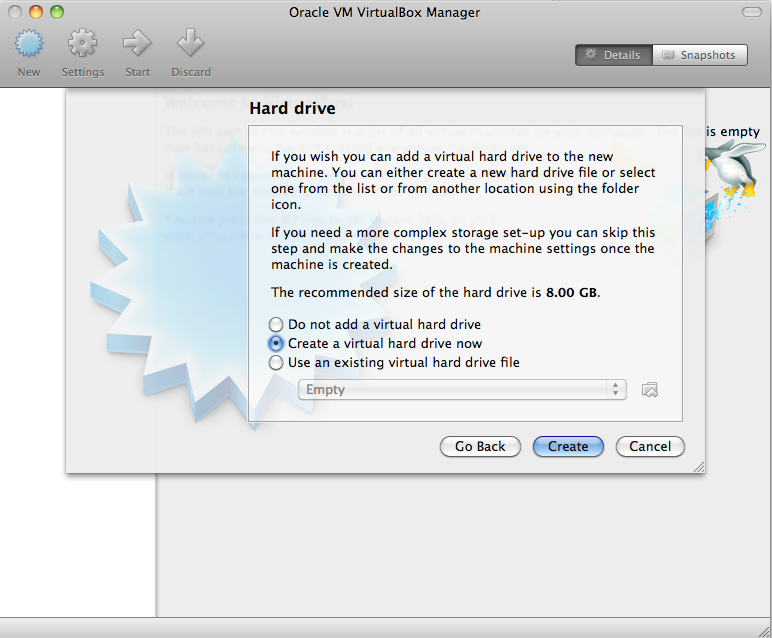
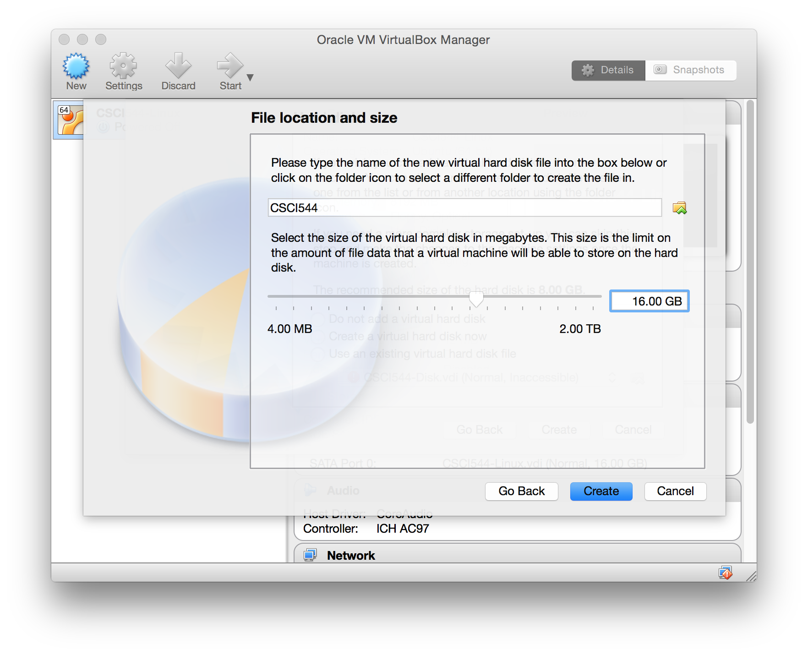
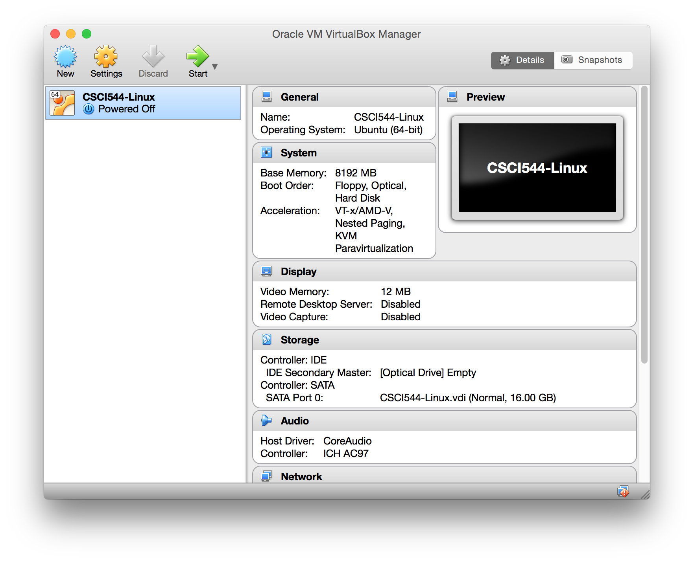
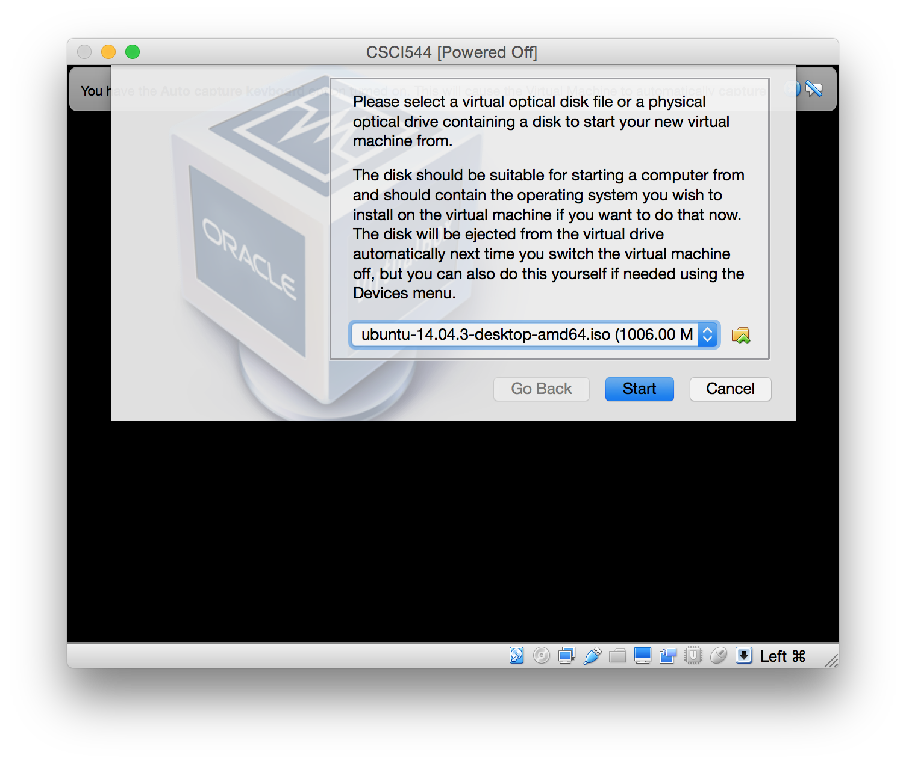
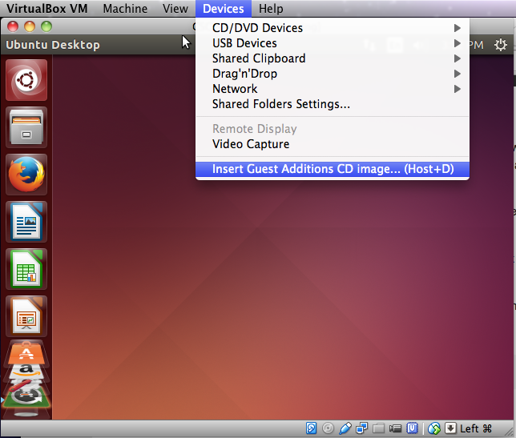

CSCI 544: VirtualBox
Setting up Ubuntu with VirtualBox
Below is an install guide for setting up VirtualBox with Ubuntu
14.04.3 on your system. If you have problems, more detailed
instruction and troubleshooting tips can be found on the Ubuntu site.
- Download the version of VirtualBox for
your machine (under “VirtualBox platform packages”, choose the host
package that corresponds to your operating system (i.e. if you’re installing on Mac, choose the package “VirtualBox 5.0.2 for OS X hosts”)).
- Download Ubuntu Linux 14.04.3 LTS.
- Follow the steps on your system to install VirtualBox.
- Open the VirtualBox application.
- Select “New” from the application ribbon, choose a name for your
system, and select Linux/Ubuntu (64 bit).

- Select the amount of memory for your virtual machine (If you
have 4GB of RAM or more, generally set this to 2048MB or half your
system RAM, whichever is greater).

- Select the “Create a virtual hard drive now” option:
- Select the “VDI (VirtualBox Disk Image)” option
- Select “Dynamically allocated”
- Select the starting drive size (I recommend 16GB)


- With your new instance selected, select start from the
application ribbon.

- When prompted, select the previously downloaded Ubuntu iso file
as the virtual optical disk file.

- Follow the prompts to install Ubuntu.
- Adding Guest Additions (extensions to help Ubuntu run better when
virtualized). See this
site for more complete instructions.
- After restarting your system, open a terminal and run "sudo
apt-get install build-essential module-assistant linux-headers-generic".
- From the menu, select Devices > Insert Guest Additions CD
Image.

- Select "Run" when prompted and enter your password.
- After restarting one more time, open the terminal and run "sudo
apt-get install git" to install git on your new system.